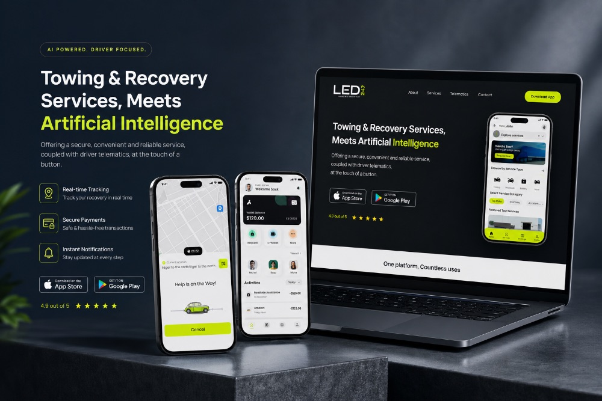
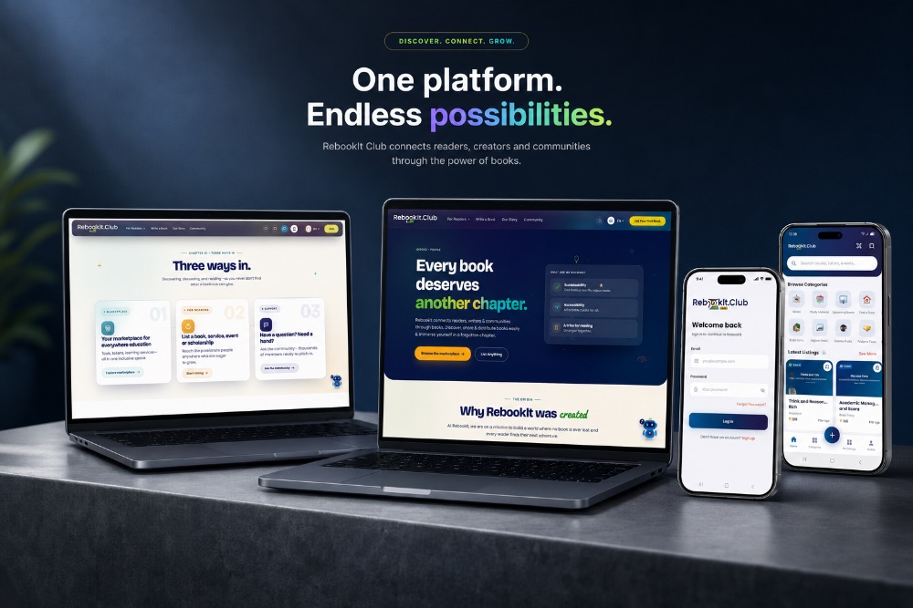
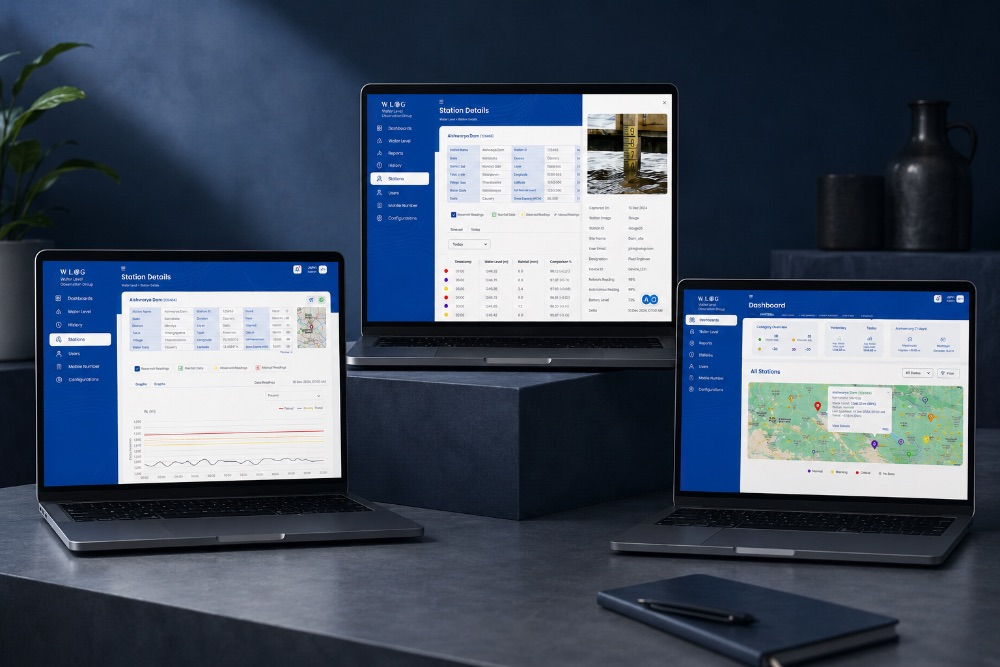
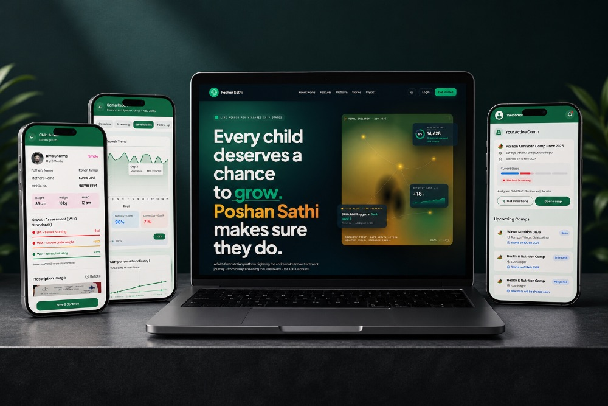

“Our field staff went from paper registers to flagging a high-risk child the same day they screen them.”
Dr. Navneet
Poshan Sathi
Your Partner In
Loop Methods is an AI software development company in Noida. We engineer scalable AI, cloud, and mobile technology that turns enterprise challenges into measurable outcomes.
20+
Years
4
Continents
10+
Industries Served
15+
Countries
What we do
Every engagement is staffed by engineers who own the outcome end to end — from architecture and build through to deployment and run.
Engineers work spec-in-hand with AI tooling handling boilerplate, tests, and repetitive implementation.
Learn moreNative and cross-platform mobile products engineered for enterprise scale and reliability.
Learn moreAutonomous agents and workflow automation that remove repetitive work from your operations.
Learn moreDocumented review and approval gates so AI-generated code ships safe, correct, and secure.
Learn moreCloud-native infrastructure and CI/CD pipelines built to run reliably at enterprise scale.
Learn moreSearch visibility and conversion optimization that turn traffic into pipeline.
Learn moreHow we build
A dedicated business analyst maps the problem first — BRD, feasibility study, and estimation — before a single line is written.
Engineers work spec-in-hand with AI coding tools handling boilerplate, tests, and repetitive implementation.
Every AI-generated module passes a documented review and approval gate — architecture, security, and correctness.
Every feature is demonstrated and screenshot-verified before hand-off. No black-box delivery.
Why Loop
We're a multi-industry partner, not a fixed-scope studio. Our senior team turns complex challenges into scalable, secure solutions.
About Loop MethodsAI tooling compresses build time on the repetitive work, so senior engineers focus where it matters.
Every AI-generated module passes a documented human review gate before it ships.
A documented BRD and estimation up front means no surprises once the build begins.
Architecture decisions are made for where you're headed, not just where you are today.
HYRIX AI
Hire Smarter. Hire Faster. Hire Better.
An AI-native recruiting platform that automates sourcing, screening, and interviewing \u2014 while keeping a human in control at every stage. 10x faster hiring, 90% less manual work.
Explore HYRIX AICandidate pipeline, automated
Featured cases

AutomotiveA vehicle assistance platform connecting drivers with towing, repairs, and car washes in one place.
Know more
E-commerceA marketplace for book lovers to buy, sell, and discover pre-loved books while connecting with fellow readers.
Know more
Disaster ResponseA real-time forecasting platform helping government teams monitor river levels and respond faster to floods.
Know more
HealthcareA digital child nutrition platform used by field health teams to flag malnutrition early and manage nutrition camps.
Know moreClient voices
“Our field staff went from paper registers to flagging a high-risk child the same day they screen them.”
Dr. Navneet
Poshan Sathi
“Towing, repairs and washes all landed in one app, and nothing came back for a rebuild.”
Keith Dixon
LED360
“They took an escrow idea to a working Hyperledger platform — the compliance questions were answered before we asked.”
Pervez
Trustin Digital Escrow
“Listing, chat and checkout were built the way readers actually behave. Sellers understood it without instructions.”
Kerri Berrick
Rebookit Club
“The scanner does not just report problems, it tells my team exactly what to fix first.”
Manisha Moudgil
Aquira Access
01 / 05
Common questions
Still curious? Get in touch and we'll walk you through it.
Every engagement starts with a documented BRD and estimation, so scope and cost are agreed before the build begins — not billed by the hour after the fact.
After discovery and documentation, we typically assemble a senior team within one to two weeks, depending on the specialisms your build needs.
Most of our work is enterprise-scale, but we take on select startup and scale-up engagements where our senior team and governance model add real leverage.
Engineers work spec-in-hand with AI tooling handling boilerplate, tests, and repetitive implementation — freeing senior time for architecture and judgment calls.
Every AI-generated module passes a documented human review and approval gate — architecture, security, and correctness — before it merges.
Yes — our delivery pods are built to flex with your roadmap, adding or rolling off specialists as scope changes.
Tell us where you're headed. We'll bring the senior team to get you there.
Get in Touch